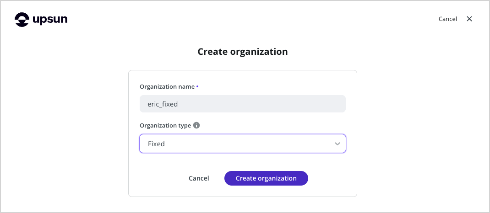
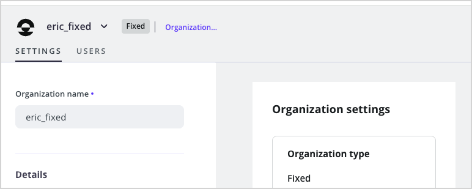
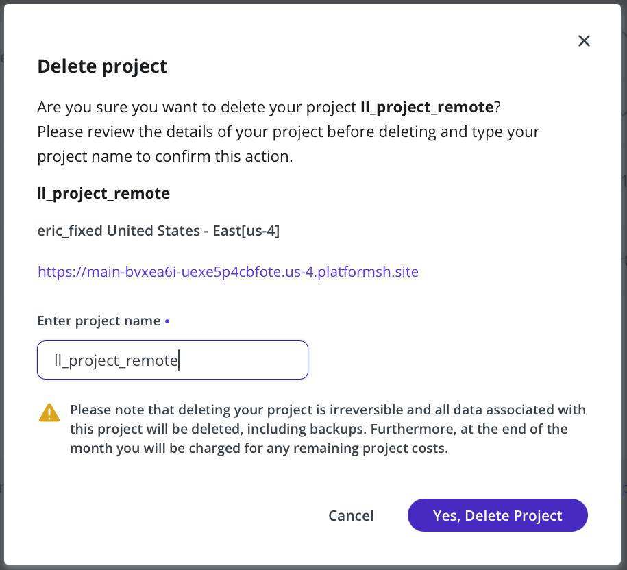

Deploying Learning Log
Building a Django project that works on your system is satisfying, but it gets even more satisfying when you see your site deployed where anyone can access it.
In the second half of Chapter 20, the book walks you through the process of deploying Learning Log to the hosting company Platform.sh. That company has rebranded as Upsun, and they've changed their approach to deployment somewhat. The printed instructions no longer work for deployment, but the instructions here are fully up to date. If you run into any steps that don't seem to work, please reach out and I will update these instructions. Thank you!
Making an Upsun Account
To make an account, go to https://upsun.com and click the Free Trial button.
Upsun currently offers a 15-day free trial, but in order to deploy your project you'll need to have a credit card on file. If you destroy your project before the 15-day period is up, your card should not be charged.
You'll be prompted to add a payment method when you create an empty project on Upsun's servers.
Note
Many hosting companies used to offer free trials, without requiring users to set up a payment method. With the growth of cryptocurrency miners, bot networks, and a rapid rise in abusive users, almost every company now requires users to set up a payment method as an anti-abuse measure.
Flex and Fixed plans
Upsun offers two types of deployment plans, Flex and Fixed. With a Flex plan, you can adjust the size of individual resources as your project grows. With a Fixed plan, you choose an overall set of resources, and then you can upgrade those resources as a group when your project grows.
Upsun steers people towards Flex plans, but it's more expensive and not needed when you're first learning to deploy a small project.
Adding a Fixed Organization
When you create an account on Upsun, you also create a default Organization. That default organization is on their Flex plan. Make a new Organization on the Fixed plan by clicking the dropdown arrow next to My Projects on the dashboard, and then clicking New organization:

In the Create organization dialog that appears, choose a name for your new organization. I used the form <first_name>_fixed. Make sure to change the Organization type to "Fixed".

Click the Create organization button, and you should see a confirmation that your organization is set up to use Upsun's Fixed resources:

The Upsun CLI
To deploy and manage a project on Platform.sh, you’ll need the tools available in the Command Line Interface (CLI). To install the latest version of the CLI, visit https://docs.upsun.com/administration/cli.html and follow the instructions for your operating system. If you're on Windows and haven't installed something like this in a terminal before, I recommend using Scoop, a tool for installing utilities on Windows. Scoop makes it easy to install the Upsun CLI, and many other tools you might find helpful as you continue working on more complex programming projects.
Creating a requirements.txt file
The remote server needs to know which packages Learning Log depends on, so we’ll use pip to generate a file listing them. Again, from an active virtual environment, issue the following command:
The freeze command tells pip to write the names of all the packages currently installed in the project into the file requirements.txt. Open this file to see the packages and version numbers installed in your project:
Learning Log already depends on specific versions of four different packages, so it requires a matching environment to run properly on a remote server. (We installed two of these packages manually, and two others were installed automatically as dependencies of those packages.)
When we deploy Learning Log, Upsun will install all the packages listed in requirements.txt, creating an environment with the same packages we’re using locally. Because of this, we can be confident the deployed project will function just like it has on our local system. This approach to managing a project is critical as you start to build and maintain multiple projects on your system.
Using Git to Track the Project's Files
As discussed in Chapter 17, Git is a version control program that allows you to take a snapshot of the code in your project each time you implement a new feature successfully. If anything goes wrong, you can easily return to the last working snapshot of your project; for example, if you accidentally introduce a bug while working on a new feature. Each snapshot is called a commit.
Using Git, you can try implementing new features without worrying about breaking your project. When you’re deploying to a live server, you need to make sure you’re deploying a working version of your project. To read more about Git and version control, see Appendix D.
Installing Git
Git may already be installed on your system. To find out, open a new terminal window and issue the command git --version:
If you get a message indicating that Git is not installed, see the installation instructions in Appendix D.
Configuring Git
Git keeps track of who makes changes to a project, even when only one person is working on the project. To do this, Git needs to know your username and email. You must provide a username, but you can make up an email for your practice projects:
(ll_env)learning_log$ git config --global user.name "eric"
(ll_env)learning_log$ git config --global user.email "eric@example.com"
If you forget this step, Git will prompt you for this information when you make your first commit.
Ignoring Files
We don’t need Git to track every file in the project, so we’ll tell it to ignore some files. Create a file called .gitignore in the folder that contains manage.py. Notice that this filename begins with a dot and has no file extension. Here’s the code that goes in .gitignore:
We tell Git to ignore the entire ll_env directory, because we can re-create it automatically at any time. We also don’t track the __pycache__ directory, which contains the .pyc files that are created automatically when the .py files are executed. We don’t track changes to the local database, because it’s a bad habit: if you’re ever using SQLite on a server, you might accidentally overwrite the live database with your local test database when you push the project to the server. The asterisk in *.sqlite3 tells Git to ignore any file that ends with the extension .sqlite3.
Note
If you’re using macOS, add .DS_Store to your .gitignore file. This is a file that stores information about folder settings on macOS, and it has nothing to do with this project.
Committing the Project
We need to initialize a Git repository for Learning Log, add all the necessary files to the repository, and commit the initial state of the project. Here’s how to do that:
(ll_env)learning_log$ git init
Initialized empty Git repository in /Users/eric/.../learning_log/.git/
(ll_env)learning_log$ git add .
(ll_env)learning_log$ git commit -am "Initial state, before deployment."
[main (root-commit) c7ffaad] Initial state, before deployment.
42 files changed, 879 insertions(+)
create mode 100644 .gitignore
--snip--
create mode 100644 requirements.txt
(ll_env)learning_log$ git status
On branch main
nothing to commit, working tree clean
(ll_env)learning_log$
We issue the git init command to initialize an empty repository in the directory containing Learning Log. We then use the git add . command, which adds all the files that aren’t being ignored to the repository . (Don’t forget the dot.) Next, we issue the command git commit -am "commit message": the -a flag tells Git to include all changed files in this commit, and the -m flag tells Git to record a log message .
Issuing the git status command indicates that we’re on the main branch and that our working tree is clean. This is the status you’ll want to see anytime you push your project to a remote server.
Deploying the project
At this point you should have an Upsun account with an organization on the Fixed plan, and the Upsun CLI should be installed on your system. You should have a requirements.txt file, listing all the project's requirements. You should have made an initial Git commit, so if anything doesn't work you can restore your project to this known working state.
Installing django-simple-deploy
It's time to deploy the project. We'll use django-simple-deploy, a tool that automates initial Django deployments. With django-simple-deploy, you install a plugin for the host you're working with (in this case Upsun), and it takes care of the configuration work necessary to build a working remote version of the project.
Note
Disclaimer: I'm the maintainer of django-simple-deploy. I created this project after watching countless Django developers struggle with the initial deployment process. It's not just for beginners; it helps everyone avoid typos and other small mistakes that cause so many deployment attempts to fail. The full documentation for django-simple-deploy can be found here.
First, install dsd-upsun, the plugin that handles deployment to Upsun:
After adding a new requirement, the requirements.txt file needs to be updated. If you open requirements.txt again, you'll see that django-simple-deploy has been added along with dsd-upsun.
Now add django_simple_deploy to INSTALLED_APPS, just like you did with django-bootstrap5 earlier:
--snip--
INSTALLED_APPS = [
--snip-
# Third party apps.
'django_bootstrap5',
'django_simple_deploy',
--snip--
Note that the name here is django_simple_deploy with underscores, even though the package name is django-simple-deploy with hyphens. This is the pattern that almost all third-party Python packages follow.
These changes need to be committed before making Upsun-specific configuration changes:
Frequently committing known states of a project is an important habit as your projects become more complex.
Creating a Project on Upsun
Now it's time to make a new project on Upsun. First, authenticate with the CLI:
This command should open a browser, where you can confirm the terminal-based login.
Now run the create command, to generate a new project on Upsun:
(ll_env)learning_log$ upsun create --title ll_project_remote
Enter a number to choose an organization (-o):
[0] My Projects (<org-id>)
[1] eric_fixed (<org-id>)
> 1
Creating a project under the organization eric_fixed (<org-id>)
* Region (--region)
The region where the project will be hosted.
--snip--
[us-4.platform.sh] Charleston, United States (Google)
> us-4.platform.sh
Default branch (--default-branch)
The default Git branch name for the project (the production environment)
Default: main
> main
Local Git repository detected: /.../learning_log
Set the new project ll_project_remote as the remote for this repository directory? [Y/n] y
The estimated monthly cost of this project is: $12.00 USD
Are you sure you want to continue? [Y/n] y
The Upsun Bot is activating your project
▄ ▄
▄█▄▄▄█▄
▄██▄███▄██▄
█ █▀▀▀▀▀█ █
▀▀ ▀▀
The project is now ready!
--snip--
Note
This is the point at which Upsun will verify that you have a payment method on file. If you see a message reading "Insufficient credit to create a new project", follow the link to add a payment method.
The new remote project needs a name. You can use any name with underscores, but it's helpful to use a name similar to what you used when running django startproject. At the same time, it's nice to use a name that's distinct from names that have already been used. The name ll_project_remote lets you distinguish between the ll_project directory on your local system, and the remote project on Upsun.
You'll be prompted for which organization to use; make sure to use the one that's on the Fixed plan. You'll be asked to choose a region; any one should work, but it's usually better to choose one relatively close to your location. You'll be prompted for which branch to use. There's only one branch, main, so use that. Finally, you'll need to confirm the estimated cost, which you'll be charged if you keep your project deployed beyond the free trial period.
After you've answered all the questions, you should see a dancing robot as Upsun creates the remote resources for you.
Configuring Learning Log for Upsun
Now you have a project that works locally, and an empty project on Upsun's servers. The project needs some new files and configuration changes in order to work on Upsun. You can add those files manually, but it's easy to make a small mistake like a typo, or miss a required file. These simple mistakes can take a long time to sort out, even for experienced developers, because every hosting platform has slightly different requirements.
django-simple-deploy avoids that issue by making all the necessary changes for you. Running the manage.py deploy command makes those configuration changes:
(ll_env)learning_log$ python manage.py deploy --deployed-project-name ll_project_remote
Configuring project for deployment...
Logging run of `manage.py deploy`...
Created /.../dsd_logs/dsd_2025-11-10-185305.log.
Deployment target: Upsun
Using plugin: dsd_upsun
--snip--
--- Your project is now configured for deployment on Upsun. ---
To deploy your project, you will need to:
- Commit the changes made in the configuration process.
$ git status
$ git add .
$ git commit -am "Configured project for deployment."
- Push your project to Upsun's servers:
$ upsun push
- Open your project:
$ upsun url
- As you develop your project further:
- Make local changes
- Commit your local changes
- Run `upsun push`
- You can find a full record of this configuration in the dsd_logs directory.
You need to tell django-simple-deploy the name of the project on Upsun, and the --deployed-project-name argument lets you do that. After running this command, you should see a summary of the changes that were made to your project in preparation for pushing it to Upsun. django-simple-deploy looks for a clean Git status before it makes configuration changes, so if you forgot to run git commit before calling deploy, you might have to make another commit and then run deploy a second time.
The final block of output summarizes how to review the changes that were made, push your project to Upsun's servers, and open your project. It also summarizes briefly how to push subsequent changes from your local system to Upsun. We'll follow these steps now to finish the deployment.
Reviewing and committing configuration changes
An external tool has just made a number of changes to your project. Git helps you see exactly what changes were made:
(ll_env)learning_log$ git status
modified: .gitignore
modified: ll_project/settings.py
modified: requirements.txt
Untracked files:
.platform.app.yaml
.platform/
This output shows that three files were modified, and some new files were added. You can see what changes were made by running git diff <file-path>. For example, here's the changes made to the settings.py file:
(ll_env)learning_log$ git diff ll_project/settings.py
--snip--
+# Upsun settings.
+import os
+
+if os.environ.get("PLATFORM_APPLICATION_NAME"):
+ # Import some Upsun settings from the environment.
+ from platformshconfig import Config
+
+ config = Config()
+
+ try:
+ ALLOWED_HOSTS.append("*")
+ except NameError:
+ ALLOWED_HOSTS = ["*"]
+
+ DEBUG = False
--snip--
It takes a little to get used to the format of a git diff listing. If what you see isn't entirely clear, look at this output and then look at the file in your text editor. The git diff output should show you where to focus your attention in the file.
The important part to notice here is that a conditional block has been added to the end of the settings file. Briefly, if the project is running in an Upsun environment, these settings will override the settings that were defined earlier in the file. Those settings will still work on your system, but the Upsun-specific settings will take effect in the Upsun environment.
If you run git diff against the other files listed you'll see that a dsd_logs directory is being ignored, and a couple requirements were added that need to be installed in Upsun's environment.
You can open the new files, such as .platform.app.yaml in your text editor and see what was added. These files tell Upsun how to build the project in their remote environment, and which resources to attach to the project. The .platform name appears here because Upsun has not fully transitioned away from their former name, Platform.sh.
When you're finished reviewing the changes that were made, make a new commit:
(ll_env)learning_log$ git add .
(ll_env)learning_log$ git commit -am "Configured project for deployment to Upsun."
(ll_env)learning_log$ git status
On branch main
nothing to commit, working tree clean
It's a good habit to check git status after committing more significant changes, to make sure you haven't missed anything. It's quite easy, for example, to forget to run git add and find that you've got a few files that haven't actually been committed yet.
Pushing the project to Upsun
Now it's time to push the project to Upsun:
(ll_env)learning_log$ upsun push
$ upsun push
Selected project: ll_project_remote (<id>)
Pushing HEAD to the environment main (type: production).
Are you sure you want to continue? [Y/n] y
--snip--
To git.us-4.platform.sh:uexe5p4cbfote.git
* [new branch] HEAD -> main
This command pushes all your project's files to Upsun's servers. You'll be asked one last time to confirm that you want to push your project to Upsun. The push command also causes Upsun to set up an environment from which the project can be served to end users. It installs the project's requirements, runs the database migrations, and starts listening for requests. This process can take about 3-10 minutes. There's a lot of output, but I encourage you to skim through it. It won't all make sense, but a lot will. You can see it copying files, installing packages, running migrations, and getting ready to process requests.
When your project has been pushed, you can open it with the url command:
(ll_env)learning_log$ upsun url
Enter a number to open a URL
[0] https://main-bvxea6i-uexe5p4cbfote.us-4.platformsh.site/
[1] http://main-bvxea6i-uexe5p4cbfote.us-4.platformsh.site/
> 0
https://main-bvxea6i-uexe5p4cbfote.us-4.platformsh.site/
When you run this command, you'll be shown a couple URLs where your project can be seen. Enter 0 for the URL with https, and your project will open in a new browser tab:

This looks just like the project does when you used the runserver command, but now anyone can access your project. If you want someone else to try it out, just share the URL as you would for any web site you want to share.
Upsun created a new database when it built the project, so none of the data you entered locally was copied over to the remote project. Take a moment to register an account on your deployed instance of Learning Log. If you can register an account, you'll know your database is working correctly.
Creating a superuser
When you maintain a deployed project, you'll almost certainly want access to the Django admin site. For that, you need a superuser. The ssh command lets you run the same terminal commands you were using locally, on the remote project:
(ll_env)learning_log$ upsun ssh
web@ll_project_remote.0:~$ ls
accounts learning_logs ll_project logs manage.py requirements.txt static
web@ll_project_remote.0:~$ python manage.py createsuperuser
Username (leave blank to use 'web'): ll_admin_remote
Email address:
Password:
Password (again):
Superuser created successfully.
web@ll_project_remote.0:~$ exit
logout
Connection to ssh.us-4.platform.sh closed.
(ll_env)learning_log$
When you first run the upsun ssh command, you may get another prompt about the authenticity of this host. If you see this message, enter Y and you should be logged in to a remote terminal session.
After running the ssh command, your terminal acts just like a terminal on the remote server. Note that your prompt has changed to indicate that you’re in a web session associated with the project named ll_project_remote. If you issue the ls command, you’ll see the files that have been pushed to the server.
Issue the same createsuperuser command we used in Chapter 18 . This time, I entered an admin username, ll_admin_remote, that’s distinct from the one I used locally . When you’re finished working in the remote terminal session, enter the exit command . Your prompt will indicate that you’re working in your local system again.
Now you can add /admin/ to the end of the URL for the live app and log in to the admin site. If others have already started using your project, be aware that you’ll have access to all their data! Take this responsibility seriously, and users will continue to trust you with their data.
Note
Windows users will use the same commands shown here (such as ls instead of dir), because you’re running a Linux terminal through a remote connection.
Finishing Chapter 20
You can now go back to the book and pick up on page 459, at the Creating Custom Error Pages section. The only difference you’ll need to keep in mind is that you’ll use upsun whenever you see the command platform used in the book. Also, any reference to Platform.sh should be read as a reference to Upsun.
For more specific information about deploying Django projects to Upsun, see the main Django documentation page for Fixed deployments.
Destroying the remote project
You'll begin to accrue charges for your deployment if you leave it running beyond the free trial period. The instructions in the book for deleting the remote project should work, but I want to repeat them here so there's no confusion.
Deleting with the CLI
In your local project environment, you can use the project:delete command to destroy your remote project:
$ upsun project:delete
You are about to delete the project:
ll_project_remote (<id>)
* This action is irreversible.
* Your site will no longer be accessible.
* All data associated with this project will be deleted, including backups.
* You will be charged at the end of the month for any remaining project costs.
Are you sure you want to delete this project? [y/N] y
Type the project title to confirm: ll_project_remote
The project ll_project (<id>) was deleted.
This is a reliable way to delete your project. However, you should log in to https://upsun.com and visit your dashboard to verify you don't have any active resources remaining.
Deleting through the Upsun dashboard
Every hosting company I've ever worked with has a browser-based dashboard. Some are more complex than others, so make sure you poke around and see how your host's dashboard is organized.
On Upsun, visit https://console.upsun.com. Here's what that page looks like after deploying Learning Log:

If you click the three vertical dots, you should see an option labeled Edit plan:

Click Edit plan, scroll down, and click Delete project. You'll see a dialog for confirming the deletion:

Once you enter the project name, you can click the button labeled Yes, Delete Project.
You should see an empty dashboard after confirming the deletion. If you see the message "Create your first project", your deletion was almost certainly successful. I've run many test deployments on Upsun, and seen many odd errors and messages along the lines of "Something went wrong." If you see anything like this, just go back to https://console.upsun.com. If you see any remaining resources, click those three vertical dots, or look for a Settings tab. You usually have to scroll to the bottom of a page to find the Delete button, but it should be there.
If any of the steps shown here don't work and you can't figure out how to proceed, please reach out. I would like to keep these instructions up to date, and I always enjoy hearing from people. :)